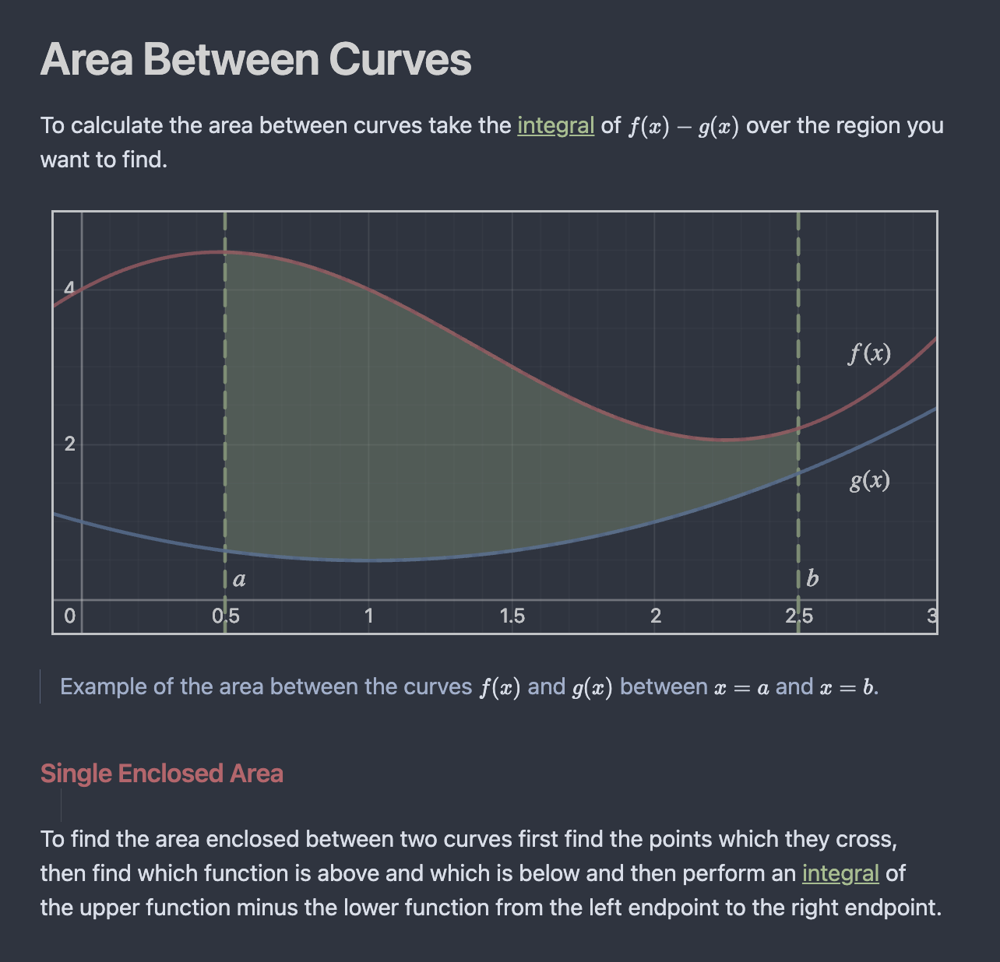
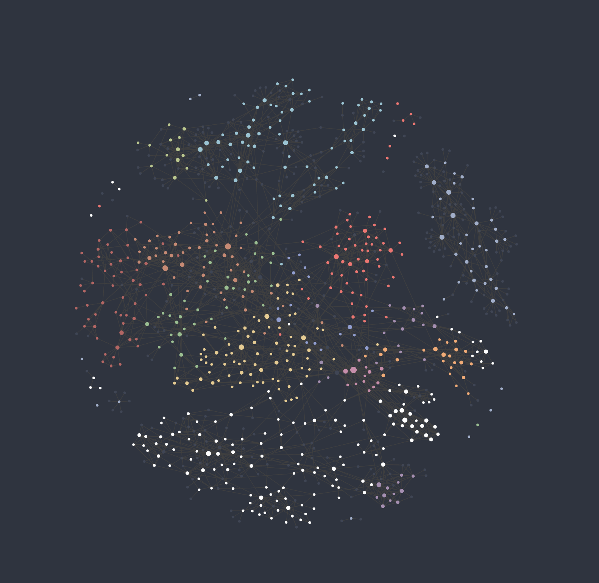

At some point when I was nearing the end of high school I had four notebooks open on my desk, one for math, one for physics, and one for chemistry. Three completely separate worlds. Each one a polite, self-contained record of a course I was taking. None of them aware the others existed.
That's how I thought notes were supposed to work. You capture the lecture, you review before the exam, you move on. The notebook is a receipt, not a resource.
I held that assumption until I saw my Obsidian graph for the first time, a semester's worth of notes rendered as a web of nodes and edges, and watched a Vector Calculus note about path integrals connect to a physics note I'd written in grade 11. The same idea, separated by years of school and two different subjects, finally in the same room. A concept I'd been holding at arm's length suddenly had a foundation I'd already built without knowing it.
That moment didn't just change how I take notes. It changed what I think notes are for.

The Problem With Paper
Paper notebooks have one fatal flaw: they're linear. A notebook is a timeline, not a knowledge base. When you write about eigenvalues in your linear algebra notebook and then encounter them again in your quantum mechanics course two semesters later, those two notes have no idea the other exists. You have to be the connection. In the middle of an exam, you might not be.
I tried nothing sophisticated before Obsidian. No Notion, no Roam, no elaborate system. Just paper, and the vague anxiety that I wasn't retaining things properly. The honest problem wasn't the tool. It was the mental model. I thought of notes as storage. Write it down so you don't have to remember it. Retrieve it later if needed.
The mental model Obsidian forces on you is different: notes are not storage, they're infrastructure. You're not archiving ideas, you're building a network of them.
The best existing example of this is Wikipedia. Not the content. The structure. Every Wikipedia article is aggressively linked. Read about gravitational potential and you'll find links to conservative forces, potential energy, Laplace's equation, and Newtonian gravity woven naturally into the prose. None of those links are decorative. Each one is an acknowledgment that this concept does not exist alone. To understand it fully you have to understand what it touches.
That's the standard I try to emulate. Every note I write asks the same question Wikipedia's editors ask implicitly: what does this concept already know? What would it say to another note if they were in the same room? Wikipedia has thousands of editors enforcing that discipline across millions of articles. In Obsidian you have to enforce it yourself. But the payoff is the same: a web of ideas that teaches you more by navigating it than any single note could on its own.
The Structure
My vault structure is intentionally flat. Top-level folders by subject, Mathematics, Physics, Computer Science, Chemistry, with notes living directly inside them. No deep nesting, no elaborate subdirectory taxonomies.
This is a deliberate choice. The temptation when you start in Obsidian is to recreate the folder hierarchy of your brain, which usually means recreating the hierarchy of your course catalog. But the folder is not the unit of organization in Obsidian. The link is.
A deep folder structure gives you the illusion of organization while actively discouraging connections across subjects. If your integral transforms note lives at Mathematics/Calculus/Transforms/FourierTransform.md, you'll think of it as a math thing. If it lives at Mathematics/FourierTransform.md with a [[Wave Equation]] link pointing across to Physics, it becomes something else entirely.
I use no tags. Only links. Tags create categories; links create relationships. There's a difference. A tag says this note belongs to a group. A link says this note has something to say to that one. The second is almost always more useful.
The Workflow
My notes are written live, in class, as the teacher speaks. I don't wait until after to organise things. I move between concepts as they come up, which means a single lecture might touch four or five notes before it's done. The note is messy while it's being built. That's fine.
The more important habit is how I handle links. When a concept comes up that I haven't written about yet, I link to it anyway. [[Critical Points]] gets written into a note about derivatives before a Critical Points note exists. The link is a placeholder and a promise. After class I go back and create the note, fill in the LaTeX, embed a Desmos graph if the concept is better understood visually than analytically. The note catches up to the link.
The third piece is what happens when a teacher briefly mentions something without explaining it. A passing reference to a theorem, a term used once and moved past. I link it and leave it. Those dangling links become a personal reading list. Later that week I'll open them and research on my own, filling in the gap the lecture left. Some of the best notes in my vault started as a single bracketed phrase in the margin of another note.
Here's a real example. A note on critical points, written this way. The LaTeX shows the derivative work. The Desmos graph sits embedded directly in the note, live and interactive, showing exactly where the derivative hits zero or fails to exist. The visual and the algebra live in the same place. And [[Critical Points]] links out to the first and second derivative tests, which link further to local extrema, absolute extrema, and concavity. By the time a concept is fully connected it rarely needs to be memorised. You've already seen it from enough angles that it sticks.
Over time the notes stop being islands. The links accumulate. And eventually you open the graph view.
The Graph View

I want to be precise about this because it sounds like mysticism but it isn't.
The graph view in Obsidian renders every note as a node and every link as an edge. When your vault is small it looks like a solar system, a few clusters orbiting each other. When it grows, it starts to look like a nervous system.
The moment that changed how I think about studying was specific. I was in a Calculus 4 class working through path integrals, the idea that you can integrate a function along a curve through a field, summing up contributions at every point along the path. It's abstract machinery. The kind of thing that sits in your notes feeling technically correct but somehow inert.
I added a link to [[Gravitational Potential]] almost as a reflex, because the field language felt familiar. And when I did, the graph lit up with a note I'd written in grade 11 physics, years earlier, different school, a completely different version of me trying to understand why objects fall. That old note was about how the gravitational potential at a point in space encodes how much work gravity would do moving an object from there to a reference point. A path-dependent quantity, integrated over a trajectory.
I'd learned path integrals without realising I already knew the intuition behind them. The concept had been sitting in my vault since high school, waiting. The link didn't just connect two notes. It collapsed three years of mathematical distance into a single edge on a graph, and suddenly the abstract machinery had a physical picture underneath it.
That's the thing paper notebooks can never do. Not because paper is bad, but because paper has no edges.
The Payoff
There's a practical exam benefit to all of this. Linked notes mean you encounter concepts in multiple contexts, which is exactly how long-term memory works. But the deeper payoff is harder to measure.
When you're forced to link a new idea to existing ones, you're forced to understand it, not just transcribe it. A link is a claim: these two things are related. Making that claim requires you to know why. If you can't link a new concept to anything in your vault, that's information. It means the concept is genuinely isolated in your understanding. Isolated concepts are the first things to evaporate after an exam.
The graph view is not a study aid. It's a mirror. A well-connected graph reflects a well-connected understanding. A sparse, fragmented graph reflects fragmented learning. You can't fake it.
If you want to see my notes in action, check out my public vault. It's a work in progress, but it gives you a sense of how the structure and linking work together to create a web of knowledge.